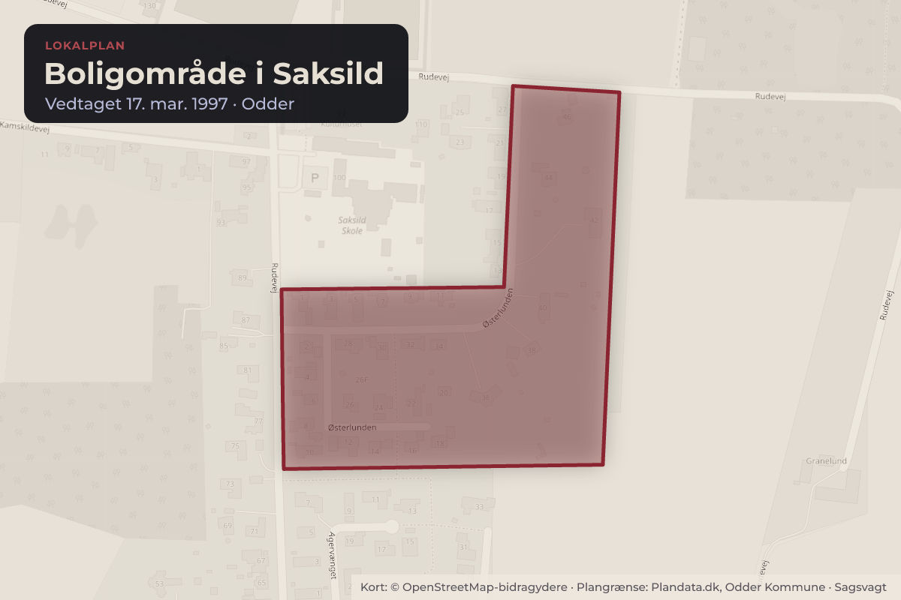
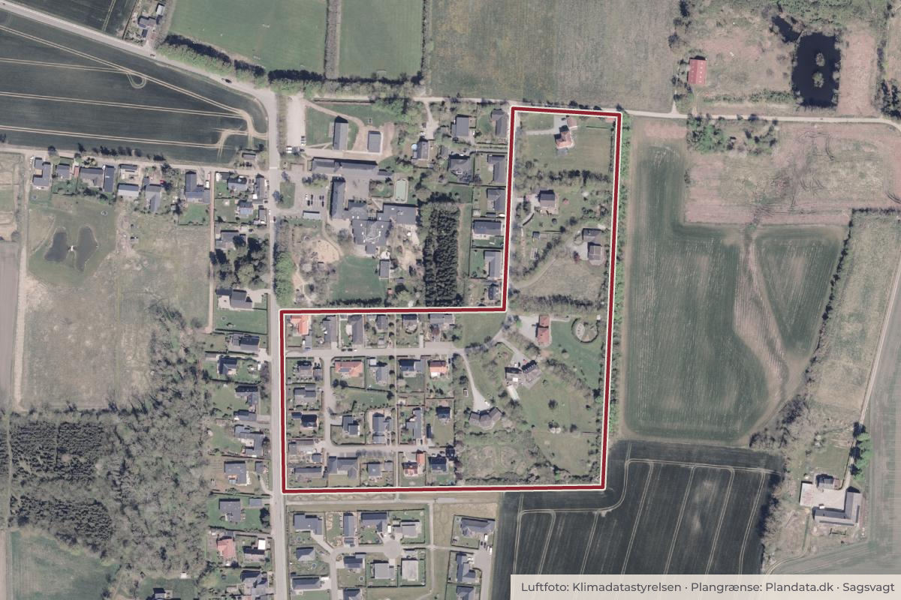

Besluttet 12. august, Udvalget for Klima, Natur og Planlægning, Odder
Igangsætning af Lokalplan nr. 3041 for et tæt-lavt boligområde i Saksild Nord

Kort: © OpenStreetMap-bidragydere. Plangrænse: Plandata.dk, Odder Kommune.

Kort fortalt
- Hvem
- Udvalget for Klima, Natur og Planlægning, Odder Kommune
- Hvornår
- Onsdag 12. august 2026
- Status
- Besluttet. Godkendt med den bemærkning, at udvalget, ud over forvaltningens bemærkninger, har følgende ønsker til det kommende byggeri: -Et inspirerende fællesareal -Forskellige boformer -Anvendelse af forskellige materialetyper Udvalget ønsker at se udviklers forslag til projektet, inden det sendes til behandling i udvalget. Udvalget ønsker i tillæg hertil, at der afholdes et borgermøde forud den politiske behandling af lokalplansforslaget.
Er noget forkert her? Skriv til os
Læs hele sagen Kommunens egen tekst
Beslutning
Godkendt med den bemærkning, at udvalget, ud over forvaltningens bemærkninger, har
følgende ønsker til det kommende byggeri:
-Et inspirerende fællesareal
-Forskellige boformer
-Anvendelse af forskellige materialetyper
Udvalget ønsker at se udviklers forslag til projektet, inden det sendes til behandling i udvalget.
Udvalget ønsker i tillæg hertil, at der afholdes et borgermøde forud den politiske behandling af
lokalplansforslaget.
Kilde: Odder Kommune, Udvalget for Klima, Natur og Planlægning, referat fra mødet onsdag 12. august 2026, punkt 8. Læs den originale sag hos kommunen.